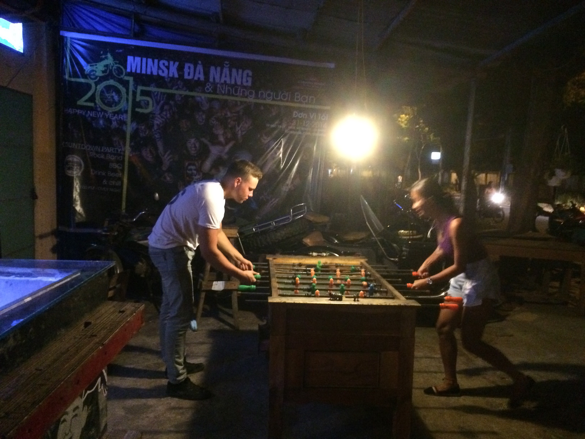
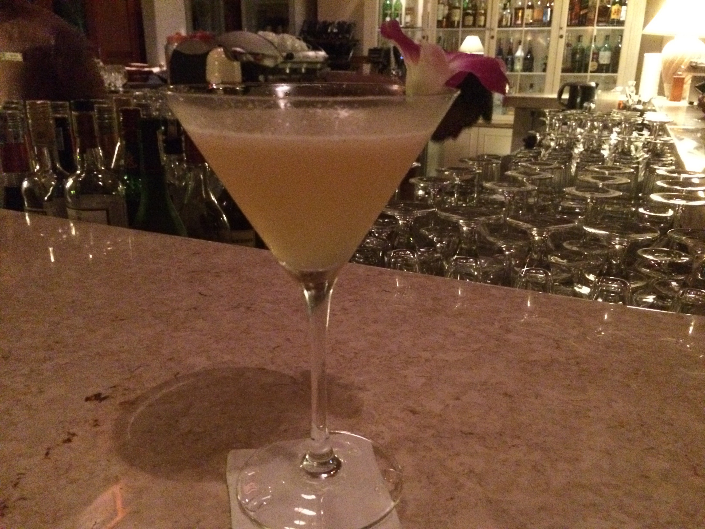

Absacker (alias digestif)
Puisque c'est ma dernière soirée à Da Nang, je voudrais vous présenter mes traditions de digestif que j'ai élaborées au cours des 3 dernières semaines.
Quand je rentre de la ville avec ma petite moto, je m'arrête souvent (très souvent) au bar Minsk pour une "dernière bière" (les Tchèques savent ce que cela signifie si vous dites "jeden pivo"). C'est un bar très détendu et décontracté avec de la musique géniale (MP et Daniel, vous adoreriez tous les deux – bien qu'il n'y ait pas de ska). absacker1



La bière est locale. Pas mal, on la boit principalement parce qu'elle est locale.
L'autre option est un digestif au bar de l'hôtel Furama (où je séjourne). Le bar est super stylé, tout comme le service et les boissons. Depuis que j'ai pris mon premier Whisky Sour ici, je suis devenu accro. Un peu alcoolique car un seul ne suffit jamais, parfois il m'en faut trois pour être satisfait. Et là, c'est fini. Du moins pour moi.


Puisque ce soir est ma dernière nuit, j'ai pris les deux digestifs. Cela va faire mal demain matin !